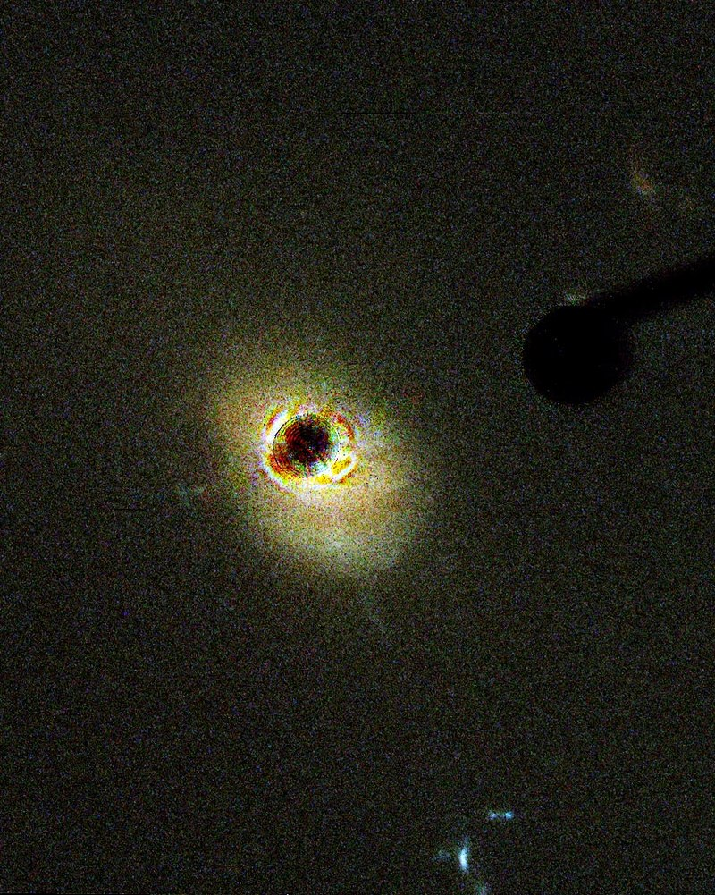
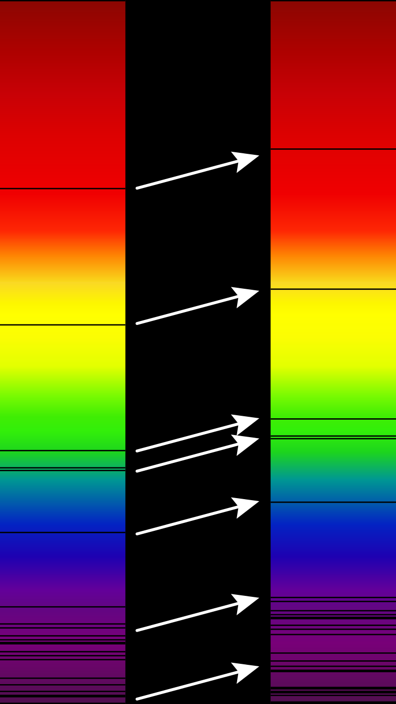
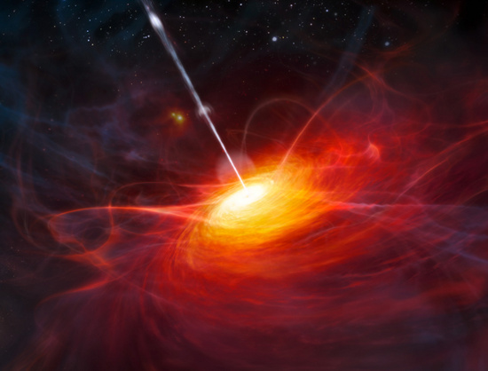

CHUẨN TINH
ĐỊNH NGHĨA
Quasar, (viết tắt của tên tiếng Anh: quasi-stellar object, có nghĩa là vật thể giống sao, trong tiếng Việt, quasar còn được gọi là chuẩn tinh) là thiên thể cực xa và cực sáng, với dịch chuyển đỏ rất lớn đặc trưng. Trong phần ánh sáng biểu kiến, quasar trông giống một ngôi sao bình thường, tức nguồn phát sáng điểm. Thực tế, đó là ánh sáng phát ra từ các quầng (halo) vật chất đặc, nằm quanh vùng nhân của các thiên hà hoạt động (thiên hà trẻ), thường là các hố đen siêu lớn.


ĐẶC ĐIỂM
Cấp sao tuyệt đối
Cấp sao tuyệt đối của quasar có giá trị trung bình -25,5m và giá trị cao nhất được biết đến ở khoảng -29m. Ví dụ quasar B2 1225+35, với độ dịch chuyển đỏ z = 2,2, độ sáng tuyệt đối của nó là -29,8m[4]. QSO thường phát sáng gấp 100 lần so với các thiên hà sáng nhất. Cường độ bức xạ của chúng biểu hiện qua biến đổi trong các vùng quang phổ hồng ngoại, quang học và vô tuyến, tuy nhiên không tồn tại bất cứ một mối liên hệ đáng kể nào giữa các biến đổi này. Điều đó chứng tỏ sự tồn tại các nguồn bức xạ quang học và bức xạ vô tuyến riêng biệt.
Trong vùng quang phổ quang học (ánh sáng nhìn được bằng mắt thường), biên độ thay đổi cấp sao đạt từ 2m đến 3m, đôi khi còn cao hơn. Có tới 68% QSO có biên độ thay đổi cấp sao lớn hơn 0,5m, 9% có biên độ cao hơn 2m, quasar 3C 446 có biên độ 3m. Có một số hiện tượng bùng sáng mạnh diễn biến trong vòng vài giờ, nhưng cũng có những thay đổi độ sáng đều đặn mạo chu kì (tiếng Anh: quasiperiodic) diễn ra trong vòng vài trăm ngày đến vài năm. Tính chất biến đổi độ sáng chứng tỏ rằng bức xạ xuất phát từ một vật thể, rất có thể đó là nhân kern, một loại nhân thiên hà rất nhỏ có đường kính chỉ vài giờ đến một tháng ánh sáng. Khối lượng của vật thể trung tâm này nặng bằng 50 triệu đến 2 tỉ lần khối lượng Mặt Trời.
Quang phổ QSO
Vào năm 1972, các thành phần sao của quasar ở gần được phát hiện trên các ảnh có độ phân giải cao. Thành phần này bao quanh QSO và đóng góp phần phát sáng rất nhỏ so với tổng bức xạ phát ra từ các vật thể này, mà chúng có thể là các thiên hà elip hay thiên hà xoắn ốc dạng SyG. Các vạch quang phổ phát xạ đậm và rất rộng trên quang phổ của QSO chủ yếu thuộc về Hydro và một số ion của các nguyên tố nặng như C III và C IV, Mg II, O III, Fe II. Các ion này nằm tập trung vào những đám mây đặc, mật độ từ 104 đến 107.cm−3, khối lượng gấp vài lần khối lượng Mặt Trời, đường kính 109 đến 1011m. Các đám mây nhỏ này nằm trong lớp vỏ lớn với bán kính đến 1000 năm ánh sáng bao quanh QSO, và chúng bay xa khỏi QSO với vận tốc đạt tận 4000 km.s−1[4].
LỊCH SỬ
Quasar đầu tiên, với ký hiệu 3C 273 được nhà thiên văn người Hoa Kỳ gốc Hà Lan[1] Maarten Schmidt phát hiện năm 1963 trong chòm sao Thất Nữ, từ đài thiên văn Palomar. Đến năm 2005 đã có hơn 100.000 quasar được phát hiện[2].
Vào những năm 50 của thế kỉ 20, các kính thiên văn vô tuyến được hoàn thiện vượt bậc. Ý tưởng tìm kiếm nền văn minh ngoài Trái Đất được chính phủ Hoa Kỳ ủng hộ và tài trợ ở giai đoạn đầu thông qua chương trình SETI (là cách viết tắt từ Search for Extra-Terrestrial Intelligence, nghĩa là Sự tìm kiếm nền văn minh ngoài Trái Đất). Các nhân viên của chương trình SETI quyết tâm tìm kiếm các tín hiệu vô tuyến có thể được các nền văn minh ngoài Trái Đất phát ra một cách chủ ý từ vũ trụ. Tất nhiên, khi các kính thiên văn vô tuyến hướng vào các nguồn phát sóng vô tuyến mạnh nhất, thì các nhà thiên văn cũng hướng các kính thiên văn quang học của mình lên các vị trí này trên các bản đồ vô tuyến của các ngôi sao, để phân tích ánh sáng các nguồn này. Trước đó, sự tồn tại của các va chạm giữa hai thiên hà, gây nên bùng phát phản ứng nhiệt hạch năng lượng cao, đi cùng với bức xạ vô tuyến kề tiếp đã được khẳng định. Tuy nhiên, các nguồn vô tuyến trên bầu trời chỉ giống như một ngôi sao mờ bình thường, với cấp sao biểu kiến yếu. Câu hỏi lớn nhất ở đây là vì sao tồn tại bức xạ vô tuyến cường độ cao như vậy mà không xảy ra sự va chạm của hai thiên hà[1]?
